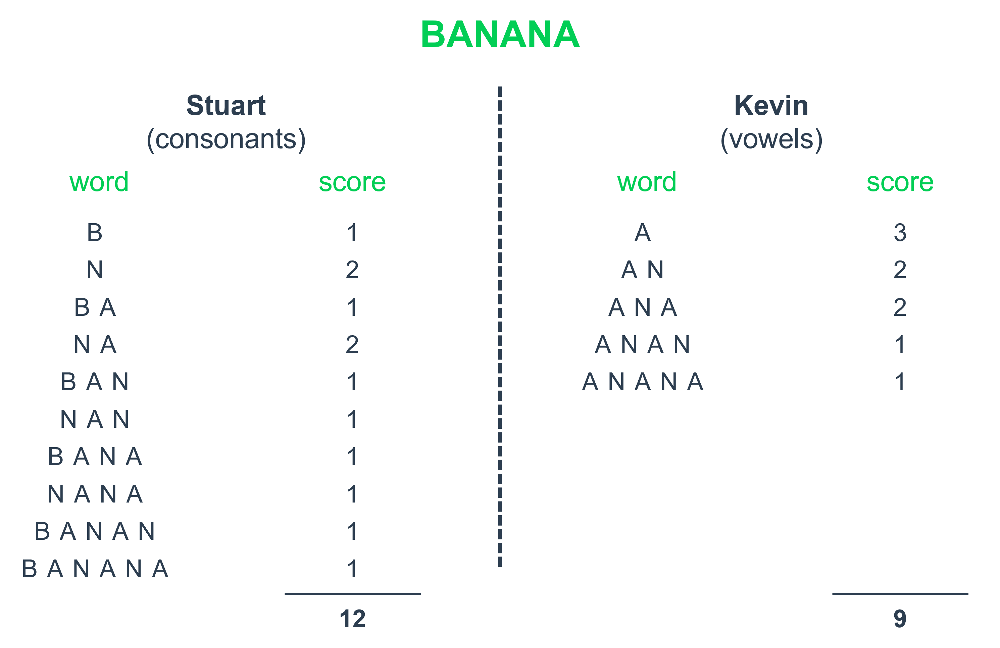

Python | The Minion Game
Challenge introduction
This challenge entails optimizing the iteration process to identify the number of elements meeting specific criteria within a given structure. To achieve maximum efficiency, one must carefully analyze the structure's properties and their relationship to the scoring procedure to pinpoint the relevant attributes.
The problem is sourced from HackerRank and is available at the following link. I recommend attempting to solve the challenge independently before reviewing the provided solution.
Problem statement
Kevin and Stuart want to play the 'The Minion Game'. Your task is to determine the winner of the game and their score.
Game Rules.
- Both players are given the same string S.
- Both players have to make substrings using the letters of the string S.
- Stuart has to make words starting with consonants.
- Kevin has to make words starting with vowels (A, E, I, O, U).
- The game ends when both players have made all possible substrings.
Scoring.
A player gets +1 point for each occurrence of the substring in the string S.
Example.
String S = BANANA
Kevin's vowel beginning word = ANA. Here, ANA occurs twice in BANANA. Hence, Kevin will get 2 Points.
For better understanding, see the image below:
If the input string S is BANANA, Stuart is the winner with 12 points.
Expected solution.
You are expected to create the code for a function named "minion_game".
- Function input: a string S only containing uppercase letters [A-Z] with 0 < len(S) ≤ 10e6.
- Function print: the winner's name and score, separated by a space on one line, or "Draw" if there is no winner.
- Function return: None.
Sample input: BANANA.
Sample output: Stuart 12.
Solution
The primary challenge in this problem lies in achieving a linear time complexity O(N), where N represents the length of the input word, denoted as S. While a straightforward approach involves nesting two for loops to track all possible substrings and their scores, a more efficient solution can be attained by utilizing only a single for loop and leveraging the design of the scoring function.
To begin, it is logical to iterate over the substrings within the word, starting with the entire word itself. For instance, considering the sample input "BANANA," we initially have one six-letter word ("BANANA") and two five-letter words ("BANAN" and "ANANA"). However, attempting to exhaustively consider all possible words by length can quickly lead to escalating complexity, particularly when accounting for the initial letter of each word to assign points.
The crucial insight here is recognizing that for each starting point within the word, there are as many substrings to the right as there are letters remaining. Furthermore, all of these substrings commence with the same letter. Consequently, the scoring process can be streamlined by iterating through the word and allocating points to Stuart or Kevin based on the number of letters to the right, contingent upon the current letter's position.
def minion_game(string):
stuart, kevin = 0, 0
num_chars = len(string)
for i in range(num_chars):
if string[i] in ('A', 'E', 'I', 'O', 'U'):
kevin += num_chars - i
else:
stuart += num_chars - i
if stuart > kevin:
print(f'Stuart {stuart}')
elif kevin > stuart:
print(f'Kevin {kevin}')
else:
print('Draw')